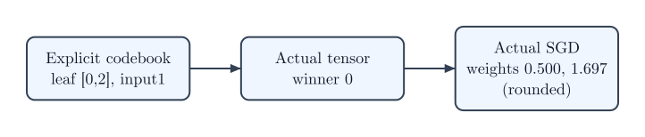
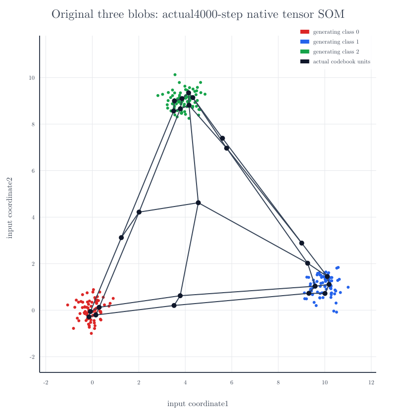
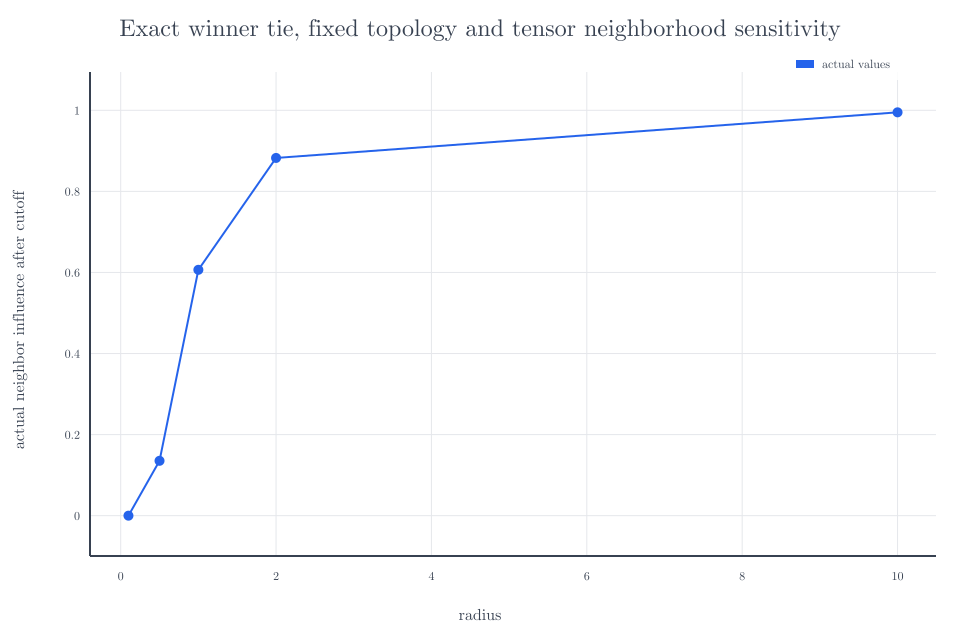
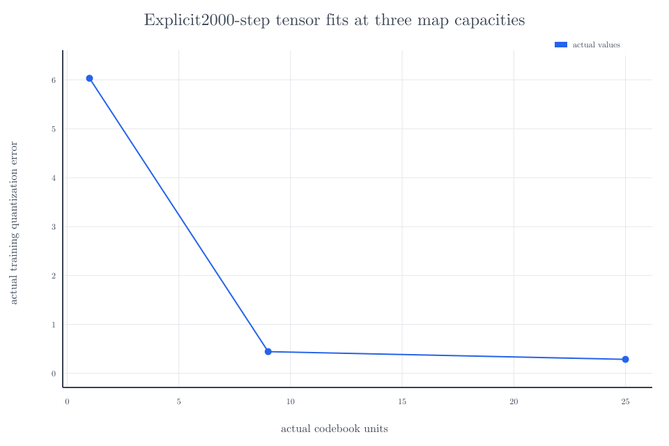

Self-organizing maps: explicit native tensor SGD and actual neighborhood winners
Abstract
Fit a rectangular grid of prototype vectors to unlabelled inputs by moving a best-matching unit and its grid neighbors toward each sampled observation. Native tensors compute every winner, neighborhood, objective and update; the original three-blob,5-by-5,4000-update experiment retains its actual input and sampling streams.
Mechanism and mathematical scope
For one input x, the lowest-index nearest codebook unit b is the discrete best-matching unit. Freeze b while differentiating the step objective
Its codebook gradient is h_bk*(w_k-x), so plain SGD at alpha_t gives w_k+=alpha_t*h_bk*(x-w_k). Native influences below1e-6 are set to zero, matching the scalar reference. The input, winner and decaying radius change between steps; this is not descent on one fixed smooth global objective and does not guarantee topology preservation. The report explicitly creates Float64 learnable codebook leaves, selects Sgd, supplies the scheduled rate and calls minimize in the visible loop. Generating blob labels color plots only.
A tiny actual producing history
The table and native concept diagram read the same producing execution. Every block below is a complete editable C++ program.
#include <dm/dm.hpp>
int main() {
namespace a = dm::algorithms;
namespace g = dm::graphics;
std::filesystem::create_directories("build");
namespace n = dm::nn;
n::set_num_threads(2);
auto weights = n::from_vector(std::vector<double>{0, 2}, {2, 1}).requires_grad_();
auto sample = n::from_vector(std::vector<double>{1});
auto grid = n::from_vector(std::vector<double>{0, 0, 0, 1}, {2, 2});
auto step = n::som_neighborhood_objective(weights, sample, grid, 1);
auto gradient = n::grad(step.objective, std::vector<n::Tensor>{weights});
n::OptimizerConfig config;
config.kind = n::OptimizerKind::Sgd;
n::Optimizer optimizer(std::vector<n::Tensor>{weights}, .5, config);
std::print(
"Actual frozen winner {}, influences `{}`, objective {}, gradient `{}`.\n",
step.winner,
step.influence.to_vector<double>(),
step.objective.item(),
gradient[0].to_vector<double>());
optimizer.step(gradient);
std::print(
"Actual codebook after one explicit Sgd step at0.5: `{}`.\n", weights.to_vector<double>());
g::Diagram concept_diagram(48, 1100);
concept_diagram.node("n0", {0, 0}, "Explicit codebook leaf [0,2], input1");
concept_diagram.node("n1", {5, 0}, std::format("Actual tensor winner {}", step.winner));
concept_diagram.node(
"n2", {10, 0}, std::format("Actual SGD weights {:.3f}, {:.3f} (rounded)",weights.at({0,0}),weights.at({1,0})));
concept_diagram.edge("n0", "n1").edge("n1", "n2");
concept_diagram.save_svg("build/self_organizing_map_tiny.svg");
}Actual frozen winner 0, influences [1, 0.6065306597126334], objective 0.8032653298563167, gradient [-1, 0.6065306597126334].
Actual codebook after one explicit Sgd step at0.5: [0.5, 1.6967346701436834].

The retained original experiment
#include <dm/dm.hpp>
int main() {
namespace a = dm::algorithms;
namespace g = dm::graphics;
std::filesystem::create_directories("build");
namespace n = dm::nn;
n::set_num_threads(2);
auto data = a::som_three_blob_example();
a::SOMParameters params;
params.rows = params.cols = 5;
params.iterations = 4000;
params.learning_rate = .5;
params.seed = 1;
auto plan = n::som_tensor_plan(data.inputs, params);
auto weights = plan.initial_weights.clone().requires_grad_();
n::OptimizerConfig config;
config.kind = n::OptimizerKind::Sgd;
n::Optimizer optimizer(std::vector<n::Tensor>{weights}, params.learning_rate, config);
std::print(
"| actual completed updates before step | actual sampled row | actual winner | current "
"frozen-winner objective | scheduled learning rate | scheduled radius | actual tensor "
"quantization error |\n| ---: | ---: | ---: | ---: | ---: | ---: | ---: |\n");
for (std::size_t t = 0; t < plan.sample_indices.size(); ++t) {
auto id = n::from_vector(
std::vector<std::int64_t>{static_cast<std::int64_t>(plan.sample_indices[t])});
auto input = n::gather(plan.inputs, id, 0).reshape({plan.inputs.size(1)});
auto step = n::som_neighborhood_objective(weights, input, plan.grid, plan.radii[t]);
optimizer.set_learning_rate(plan.learning_rates[t]);
if (t % 400 == 0)
std::print(
"| {} | {} | {} | {} | {} | {} | {} |\n",
t,
plan.sample_indices[t],
step.winner,
step.objective.item(),
plan.learning_rates[t],
plan.radii[t],
n::som_tensor_quantization_error(weights, plan.inputs).item());
optimizer.minimize(step.objective);
}
auto centers = n::from_vector(std::vector<double>{0, 0, 10, 1, 4, 9}, {3, 2});
auto assignments = n::som_assignments(weights, centers);
auto reference = a::som_train_run(data.inputs, params);
std::print(
"\nOriginal generating-center actual tensor unit ids `{}`; final tensor quantization error "
"{}, scalar reference error {}.\n",
assignments.to_vector<std::int64_t>(),
n::som_tensor_quantization_error(weights, plan.inputs).item(),
a::som_quantization_error(reference.model, data.inputs));
auto plot = n::som_lattice_plot(weights, plan.inputs, 5, 5, data.labels);
plot.title("Original three blobs: actual4000-step native tensor SOM");
plot.save_svg("build/self_organizing_map_original.svg");
}| actual completed updates before step | actual sampled row | actual winner | current frozen-winner objective | scheduled learning rate | scheduled radius | actual tensor quantization error |
|---|---|---|---|---|---|---|
| 0 | 27 | 0 | 273.25334187344146 | 0.5 | 2.5 | 0.26945126873110525 |
| 400 | 21 | 0 | 308.7748595330689 | 0.45241870901797976 | 2.2056327628811685 | 2.184465276504048 |
| 800 | 229 | 4 | 116.85131725931404 | 0.4093653765389909 | 1.945926353877927 | 1.1902361538179236 |
| 1200 | 114 | 21 | 80.98449304554936 | 0.37040911034085894 | 1.7167995681068204 | 0.8519757762583453 |
| 1600 | 57 | 1 | 48.38311755540867 | 0.33516002301781966 | 1.5146517498866572 | 0.528795127723624 |
| 2000 | 161 | 14 | 41.637261319938624 | 0.3032653298563167 | 1.3363062095621219 | 0.4229694521411495 |
| 2400 | 183 | 9 | 21.298442534844717 | 0.2744058180470132 | 1.178960302820706 | 0.4927229410171442 |
| 2800 | 150 | 20 | 7.398872552319303 | 0.24829265189570476 | 1.0401413880150612 | 0.36040727666820743 |
| 3200 | 226 | 9 | 5.933439777757568 | 0.22466448205861078 | 0.9176679693738852 | 0.30521730834991995 |
| 3600 | 183 | 4 | 1.4238030282890264 | 0.20328482987029955 | 0.8096154154790696 | 0.298070091514236 |
Original generating-center actual tensor unit ids [1, 21, 9]; final tensor quantization error 0.2865560102163615, scalar reference error 0.2865560102163615.

Explicit controls
#include <dm/dm.hpp>
int main() {
namespace a = dm::algorithms;
namespace g = dm::graphics;
std::filesystem::create_directories("build");
namespace n = dm::nn;
auto weights = n::from_vector(std::vector<double>{0, 2}, {2, 1}).requires_grad_();
auto sample = n::from_vector(std::vector<double>{1});
auto grid = n::from_vector(std::vector<double>{0, 0, 0, 1}, {2, 2});
std::vector<double> x, y;
std::print(
"| radius | actual lowest-index winner | actual winner influence | actual neighbor influence "
"| actual weighted objective |\n| ---: | ---: | ---: | ---: | ---: |\n");
for (double sigma : {.1, .5, 1., 2., 10.}) {
auto step = n::som_neighborhood_objective(weights, sample, grid, sigma);
auto influence = step.influence.to_vector<double>();
std::print(
"| {} | {} | {} | {} | {} |\n",
sigma,
step.winner,
influence[0],
influence[1],
step.objective.item());
x.push_back(sigma);
y.push_back(influence[1]);
}
auto plot = g::RPlot::create();
plot.lines(x, y, "actual values", {37, 99, 235})
.points(x, y, {37, 99, 235}, 5)
.title("Exact winner tie, fixed topology and tensor neighborhood sensitivity")
.x_label("radius")
.y_label("actual neighbor influence after cutoff");
plot.save_svg("build/self_organizing_map_controls.svg");
}| radius | actual lowest-index winner | actual winner influence | actual neighbor influence | actual weighted objective |
|---|---|---|---|---|
| 0.1 | 0 | 1 | 0 | 0.5 |
| 0.5 | 0 | 1 | 0.1353352832366127 | 0.5676676416183064 |
| 1 | 0 | 1 | 0.6065306597126334 | 0.8032653298563167 |
| 2 | 0 | 1 | 0.8824969025845955 | 0.9412484512922977 |
| 10 | 0 | 1 | 0.9950124791926823 | 0.9975062395963412 |

Actual selected work and sensitivity
#include <dm/dm.hpp>
int main() {
namespace a = dm::algorithms;
namespace g = dm::graphics;
std::filesystem::create_directories("build");
namespace n = dm::nn;
n::set_num_threads(2);
auto data = a::som_three_blob_example();
std::vector<double> x, y;
std::print(
"| grid side | actual codebook units | explicit completed SGD updates | actual tensor "
"quantization error |\n| ---: | ---: | ---: | ---: |\n");
for (std::size_t side : {1, 3, 5}) {
a::SOMParameters params;
params.rows = params.cols = side;
params.iterations = 2000;
params.learning_rate = .5;
params.seed = 1;
auto plan = n::som_tensor_plan(data.inputs, params);
auto weights = plan.initial_weights.clone().requires_grad_();
n::OptimizerConfig config;
config.kind = n::OptimizerKind::Sgd;
n::Optimizer optimizer(std::vector<n::Tensor>{weights}, params.learning_rate, config);
for (std::size_t t = 0; t < plan.sample_indices.size(); ++t) {
auto id = n::from_vector(
std::vector<std::int64_t>{static_cast<std::int64_t>(plan.sample_indices[t])});
auto sample = n::gather(plan.inputs, id, 0).reshape({plan.inputs.size(1)});
auto step = n::som_neighborhood_objective(weights, sample, plan.grid, plan.radii[t]);
optimizer.set_learning_rate(plan.learning_rates[t]);
optimizer.minimize(step.objective);
}
const auto error = n::som_tensor_quantization_error(weights, plan.inputs).item();
std::print("| {} | {} | {} | {} |\n", side, side * side, plan.sample_indices.size(), error);
x.push_back(side * side);
y.push_back(error);
}
auto plot = g::RPlot::create();
plot.lines(x, y, "actual values", {37, 99, 235})
.points(x, y, {37, 99, 235}, 5)
.title("Explicit2000-step tensor fits at three map capacities")
.x_label("actual codebook units")
.y_label("actual training quantization error");
plot.save_svg("build/self_organizing_map_work.svg");
}| grid side | actual codebook units | explicit completed SGD updates | actual tensor quantization error |
|---|---|---|---|
| 1 | 1 | 2000 | 6.033124749008291 |
| 3 | 9 | 2000 | 0.44376038591684036 |
| 5 | 25 | 2000 | 0.28615883416559124 |

API and interpretation
All model computations and fitting in the demonstrated program use dm::nn tensors. The scalar library trainer is an independent reference comparison. Data/initialization/sample controls retain the original local MT19937_64 draw order; different map capacities consume different initialization draws, so the capacity figure also changes initialization and the subsequent sampled stream. The report does not attribute its entire difference to capacity alone. No held-out labels or supervised target enter training. Quantization error is a training reconstruction summary and does not prove topology or generalization.
Reusable producers, fixtures and histories live in the canonical C++ library. Captured records own their values and do not come from a separate report replay. Selected counters and record/scalar policies are specified at their API boundaries; they are not peak-byte or wall-time budgets. Synthetic structural inputs are controlled fixtures for these mechanisms.
References
Verification: 126 scoped native cases;21 directly instrumented ASan/UBSan cases;124 executable public examples;492/492 full-file definitions and10 exact Sfc64 members;10 hovers;1588 independent records/14377 checks;frozen comparisons across all ten families with endpoint/full-width field corrections recorded;17 checkout/installed standalone headers and linked/umbrella consumers;40 executed programs and40 inspected figures with both exports. The complete original4000-step native tensor SOM trajectory agrees with an independent NumPy replay, including every winner and final assignment. Receipts: build/mepml-conversion/batch-344-353/.